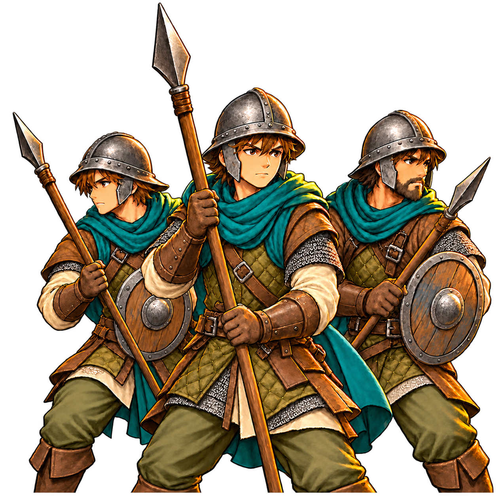

Règles du jeu
Armée, recrutement et garnisons
Former des troupes, respecter l’autorité et entretenir les effectifs.

Les règles de ce thème
Troupes, soldats et grades
Une troupe regroupe des soldats d’un type, avec un grade et une expérience. Le grade du héros limite le nombre de troupes ; le grade de chaque troupe fixe son effectif maximal.
Les capacités actuelles sont : Soldat 6, Caporal 10, Sergent 14, Adjudant 18 et Lieutenant 24. Le type fournit notamment attaque, défense, portée et PV par soldat.
Autorité nécessaire
L’autorité maximale de base vaut 3, plus le bonus de classe, plus le niveau du héros moins 1, plus les bonus d’équipement. Une troupe consomme le coût d’autorité de son type augmenté de celui de son grade.
Exemple : les miliciens coûtent 1 pour le type et 1 pour le grade Soldat, soit 2 points d’autorité. Une troupe partiellement remplie reste une troupe et garde son coût de grade.
Recruter et compléter
Le héros doit être présent dans un lieu recruteur accessible. Le type doit y être proposé, des recrues doivent rester en stock et les coûts ainsi que les limites de l’armée doivent être respectés. Une nouvelle troupe commence Soldat, avec au plus six recrues selon le stock disponible.
Compléter une troupe existante et recruter une nouvelle troupe sont des opérations différentes. Soigner des soldats blessés ne remplit pas les places laissées par des morts.
Promotion
L’expérience permet d’accéder au grade suivant lorsque ses conditions sont remplies. La promotion augmente la capacité et peut augmenter l’autorité nécessaire. Elle ne crée pas automatiquement tous les soldats des nouvelles places.
Garnison et formation
Déposer une troupe en garnison la place dans un lieu, distinct de l’armée mobile. Elle conserve son propriétaire. Places disponibles et permissions sont vérifiées avant le transfert. Être allié à un lieu n’autorise pas automatiquement tous les dépôts ou constructions.
Avant une bataille, les positions Réserve, Gauche, Centre et Droite préparent le déploiement. Faire entrer une réserve pendant le combat suit les règles d’ordres et de cases disponibles.